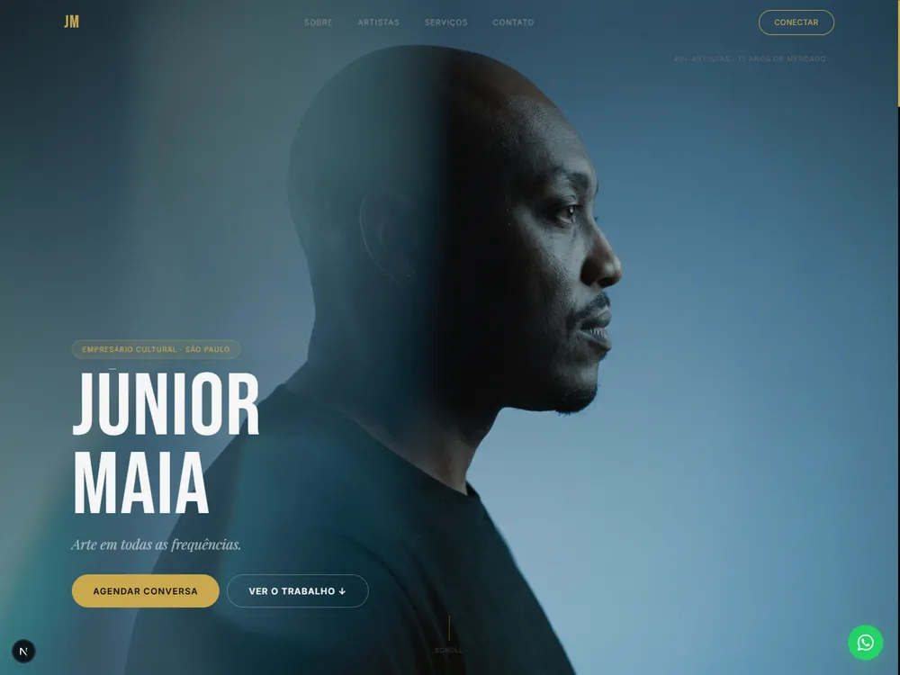
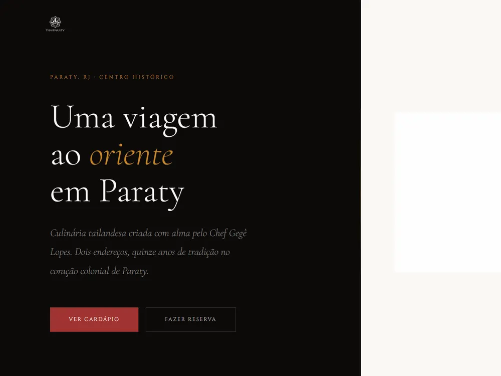
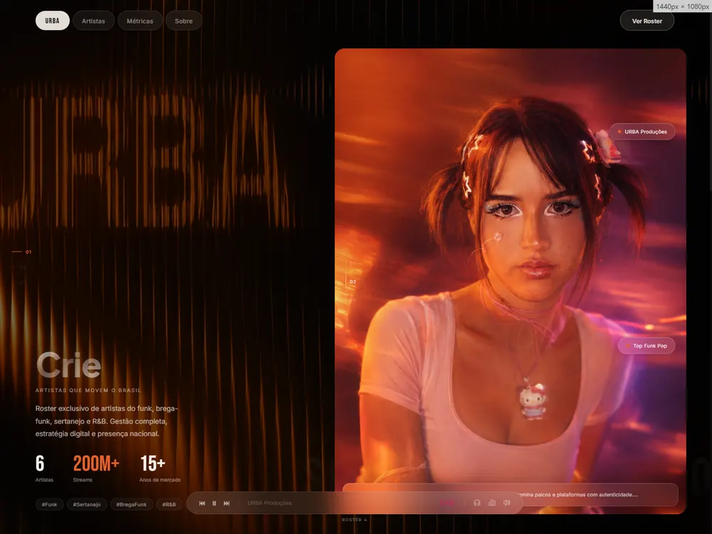

Site comercial
Para apresentar o negócio, reunir as informações importantes e levar quem chega até o contato.
Indicação, busca pelo nome QR code e link na bio
SITES E LANDING PAGES
Sites e landing pages para apresentar seu negócio com clareza e conduzir quem chega ao próximo passo.
UMA BASE PRÓPRIA
Uma base própria mantém suas informações acessíveis e organizadas.
Quem já demonstrou interesse encontra respostas claras em um só lugar.
O site conecta cada parte do negócio e conduz até o contato.
DOIS FORMATOS
Para apresentar o negócio, reunir as informações importantes e levar quem chega até o contato.
Indicação, busca pelo nome QR code e link na bio
Landing pages para campanhas, lançamentos ou ofertas que precisam de uma mensagem clara e uma ação comercial.
Conteúdo, anúncio Evento ou lançamento
Escopo e prazo são definidos após o diagnóstico, de acordo com o que o projeto precisa.
PROJETOS ENTREGUES

Site comercial para um agenciador de artistas com 15 anos de mercado. Organiza artistas, serviços e contato.
Plataforma para uma mentoria internacional. Apresenta o método e conduz até o agendamento.

Site comercial para duas unidades em Paraty, com cardápio, reservas e a história do restaurante.

Vitrine e painel de artistas para uma produtora com mais de 200 milhões de streams em seu catálogo.
COMO FUNCIONA
Leitura do momento, do público e do problema que o projeto precisa resolver.
Definição de mensagem, estrutura, referências e escopo.
Criação das páginas, dos textos e das interações combinadas.
Publicação, revisão final e orientação para os próximos passos.
PARA QUEM É
Você já vende pelas redes sociais ou por indicação e precisa reunir o negócio em um espaço próprio.
Seu negócio evoluiu e o site pode acompanhar esse novo momento.
Você precisa apresentar um serviço, lançamento ou campanha sem dispersar a atenção.
A ÁPSE
Cada projeto é acompanhado diretamente, do diagnóstico à entrega, com clareza no processo, direção nas decisões e cuidado nos detalhes.
ANTES DE COMEÇAR
É possível começar com o que já existe. A conversa inicial organiza o conteúdo disponível, identifica o que falta e define o que será produzido antes da construção.
Sim. A experiência é pensada primeiro para o celular e depois adaptada às telas maiores.
O site organiza a presença do negócio como um todo. A landing page concentra a atenção em uma oferta e conduz para uma ação principal.
Sim. O projeto pode evoluir depois da publicação. Cada nova etapa é avaliada conforme a necessidade.
PRÓXIMO MOVIMENTO
Conte sua ideia e encontre uma direção clara para colocá-la no ar.
Me conte sua ideia